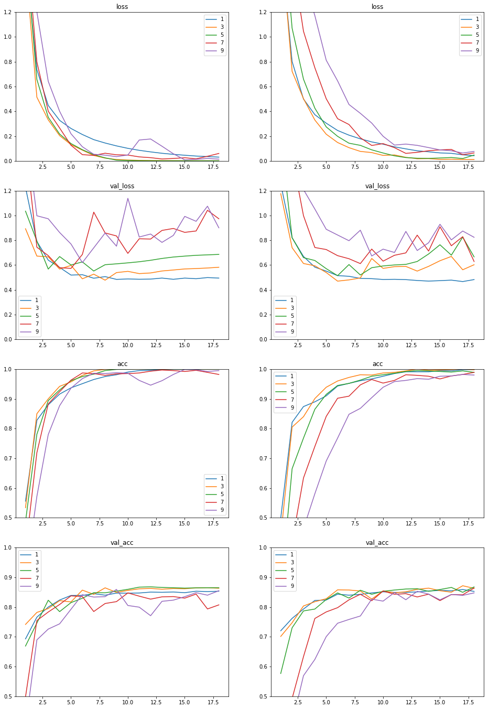

本文代码运行环境:
- windows10
- python3.6
- jupyter notebook
- tensorflow 1.x
- keras 2.x
神经网络有多少层比较合适
沈向洋在专访中表示:
ResNet他们做了152层，然后后面又做了一个1001层的，孙剑他们做的。我一直对他们不太满意，所以他们做出了非常好的结果之后，我又问了他们一个非常基础的问题：你到底要多少层？这个问题一直没有得到回答。我觉得应该有人写这样一篇基础的论文（来回答这个问题），这肯定会是一篇获奖论文，这是毫无疑问的。 回到现在这个问题，到现在为止，大家肯定会觉得是越深越好。就是打仗要打刚仗，要上力度，GPU要多，数据要多。到现在为止，因为很多新的系统也不太一样，然后大家一般认为，更深更准还是一个趋势。就像AlphaGo他们讲出来就是做了50层，他也没讲为什么做50层，可能就是工程师弄了50层就差不多了。
所以通常神经网络到底要用多少层?这是一个重要也不重要的问题。
说重要是因为神经网络的深度的确影响它的性能。我们总是期望用最少的神经元最最多或者最好的事情。
说它不重要是因为, 我们往往在实践中发现, 你用50层还是51层, 网络的预测效果差不多。
我们现在讨论1层和10的差别
因为9层和10层的网络结构似乎没有太大差别, 但是如果层数差别太大, 可能效果就不一样了, 所以我们做一个实验, 比较一下神经网络的层数对神经网络的各方面指标的影响。
我们采用上一篇教程中用到的案例: keras教程-04-手写字体识别
引入用到的库:
1 | import numpy as np |
d:\mysites\deeplearning.ai-master\.env\lib\site-packages\h5py\__init__.py:36: FutureWarning: Conversion of the second argument of issubdtype from `float` to `np.floating` is deprecated. In future, it will be treated as `np.float64 == np.dtype(float).type`.
from ._conv import register_converters as _register_converters
Using TensorFlow backend.
我们把所有代码封装到一个函数里, 这样方便多次调用, 下面的代码和上一篇的代码一样, 只是调整了结构, 如果看不懂请返回上一篇有解释:
1 | def prepare_data(n=6000, test_n=3000): |
下面我们迭代多种模型, 模型的层数分别是:1,3,5,7,9。
因为模型层数和样本量有很大关系, 样本量小的情况下更容易显示出神经网络层数太多造成的不利影响。
1 | # prepare_data的第一个参数就是训练样本的样本量 |
层数为: 1, 是否使用dropout: False
Train on 1000 samples, validate on 3000 samples
Epoch 1/18
1000/1000 [==============================] - 4s 4ms/step - loss: 1.6539 - acc: 0.5560 - val_loss: 1.2262 - val_acc: 0.6930
Epoch 2/18
1000/1000 [==============================] - 0s 148us/step - loss: 0.7366 - acc: 0.8280 - val_loss: 0.7899 - val_acc: 0.7660
Epoch 3/18
1000/1000 [==============================] - 0s 148us/step - loss: 0.4471 - acc: 0.8800 - val_loss: 0.6391 - val_acc: 0.8000
Epoch 4/18
1000/1000 [==============================] - 0s 151us/step - loss: 0.3269 - acc: 0.9160 - val_loss: 0.5804 - val_acc: 0.8237
Epoch 5/18
1000/1000 [==============================] - 0s 151us/step - loss: 0.2615 - acc: 0.9370 - val_loss: 0.5186 - val_acc: 0.8390
Epoch 6/18
1000/1000 [==============================] - 0s 154us/step - loss: 0.2128 - acc: 0.9510 - val_loss: 0.5216 - val_acc: 0.8393
Epoch 7/18
1000/1000 [==============================] - 0s 154us/step - loss: 0.1714 - acc: 0.9650 - val_loss: 0.4932 - val_acc: 0.8450
Epoch 8/18
1000/1000 [==============================] - 0s 159us/step - loss: 0.1441 - acc: 0.9750 - val_loss: 0.5062 - val_acc: 0.8400
Epoch 9/18
1000/1000 [==============================] - 0s 147us/step - loss: 0.1209 - acc: 0.9810 - val_loss: 0.4838 - val_acc: 0.8470
Epoch 10/18
1000/1000 [==============================] - 0s 161us/step - loss: 0.1011 - acc: 0.9900 - val_loss: 0.4874 - val_acc: 0.8467
Epoch 11/18
1000/1000 [==============================] - 0s 145us/step - loss: 0.0852 - acc: 0.9950 - val_loss: 0.4849 - val_acc: 0.8473
Epoch 12/18
1000/1000 [==============================] - 0s 145us/step - loss: 0.0725 - acc: 0.9960 - val_loss: 0.4863 - val_acc: 0.8503
Epoch 13/18
1000/1000 [==============================] - 0s 149us/step - loss: 0.0614 - acc: 0.9980 - val_loss: 0.4945 - val_acc: 0.8497
Epoch 14/18
1000/1000 [==============================] - 0s 157us/step - loss: 0.0528 - acc: 0.9990 - val_loss: 0.4845 - val_acc: 0.8507
Epoch 15/18
1000/1000 [==============================] - 0s 152us/step - loss: 0.0455 - acc: 0.9990 - val_loss: 0.4942 - val_acc: 0.8483
Epoch 16/18
1000/1000 [==============================] - 0s 162us/step - loss: 0.0389 - acc: 0.9990 - val_loss: 0.4893 - val_acc: 0.8533
Epoch 17/18
1000/1000 [==============================] - 0s 198us/step - loss: 0.0347 - acc: 1.0000 - val_loss: 0.4985 - val_acc: 0.8520
Epoch 18/18
1000/1000 [==============================] - 0s 171us/step - loss: 0.0303 - acc: 1.0000 - val_loss: 0.4943 - val_acc: 0.8533
层数为: 1, 是否使用dropout: True
Train on 1000 samples, validate on 3000 samples
Epoch 1/18
1000/1000 [==============================] - 4s 4ms/step - loss: 1.7496 - acc: 0.4990 - val_loss: 1.2538 - val_acc: 0.7203
Epoch 2/18
1000/1000 [==============================] - 0s 155us/step - loss: 0.8016 - acc: 0.8210 - val_loss: 0.8199 - val_acc: 0.7620
Epoch 3/18
1000/1000 [==============================] - 0s 149us/step - loss: 0.4991 - acc: 0.8740 - val_loss: 0.6690 - val_acc: 0.7933
Epoch 4/18
1000/1000 [==============================] - 0s 150us/step - loss: 0.3728 - acc: 0.8900 - val_loss: 0.5824 - val_acc: 0.8223
Epoch 5/18
1000/1000 [==============================] - 0s 150us/step - loss: 0.3042 - acc: 0.9100 - val_loss: 0.5508 - val_acc: 0.8237
Epoch 6/18
1000/1000 [==============================] - 0s 155us/step - loss: 0.2453 - acc: 0.9430 - val_loss: 0.5144 - val_acc: 0.8433
Epoch 7/18
1000/1000 [==============================] - 0s 169us/step - loss: 0.2075 - acc: 0.9520 - val_loss: 0.5087 - val_acc: 0.8400
Epoch 8/18
1000/1000 [==============================] - 0s 152us/step - loss: 0.1778 - acc: 0.9610 - val_loss: 0.4918 - val_acc: 0.8427
Epoch 9/18
1000/1000 [==============================] - 0s 153us/step - loss: 0.1531 - acc: 0.9670 - val_loss: 0.4897 - val_acc: 0.8477
Epoch 10/18
1000/1000 [==============================] - 0s 159us/step - loss: 0.1347 - acc: 0.9760 - val_loss: 0.4831 - val_acc: 0.8513
Epoch 11/18
1000/1000 [==============================] - 0s 152us/step - loss: 0.1134 - acc: 0.9850 - val_loss: 0.4845 - val_acc: 0.8493
Epoch 12/18
1000/1000 [==============================] - 0s 163us/step - loss: 0.0969 - acc: 0.9910 - val_loss: 0.4820 - val_acc: 0.8493
Epoch 13/18
1000/1000 [==============================] - 0s 159us/step - loss: 0.0814 - acc: 0.9910 - val_loss: 0.4749 - val_acc: 0.8510
Epoch 14/18
1000/1000 [==============================] - 0s 151us/step - loss: 0.0734 - acc: 0.9910 - val_loss: 0.4701 - val_acc: 0.8540
Epoch 15/18
1000/1000 [==============================] - 0s 149us/step - loss: 0.0643 - acc: 0.9950 - val_loss: 0.4736 - val_acc: 0.8560
Epoch 16/18
1000/1000 [==============================] - 0s 150us/step - loss: 0.0609 - acc: 0.9940 - val_loss: 0.4778 - val_acc: 0.8547
Epoch 17/18
1000/1000 [==============================] - 0s 156us/step - loss: 0.0490 - acc: 0.9980 - val_loss: 0.4663 - val_acc: 0.8590
Epoch 18/18
1000/1000 [==============================] - 0s 163us/step - loss: 0.0419 - acc: 0.9980 - val_loss: 0.4823 - val_acc: 0.8527
层数为: 3, 是否使用dropout: False
Train on 1000 samples, validate on 3000 samples
Epoch 1/18
1000/1000 [==============================] - 4s 4ms/step - loss: 1.5944 - acc: 0.5340 - val_loss: 0.8926 - val_acc: 0.7417
Epoch 2/18
1000/1000 [==============================] - 0s 263us/step - loss: 0.5139 - acc: 0.8500 - val_loss: 0.6719 - val_acc: 0.7820
Epoch 3/18
1000/1000 [==============================] - 0s 332us/step - loss: 0.3309 - acc: 0.9000 - val_loss: 0.6658 - val_acc: 0.7950
Epoch 4/18
1000/1000 [==============================] - 0s 284us/step - loss: 0.2036 - acc: 0.9420 - val_loss: 0.5670 - val_acc: 0.8217
Epoch 5/18
1000/1000 [==============================] - 0s 336us/step - loss: 0.1311 - acc: 0.9570 - val_loss: 0.5967 - val_acc: 0.8173
Epoch 6/18
1000/1000 [==============================] - 0s 322us/step - loss: 0.0867 - acc: 0.9790 - val_loss: 0.4886 - val_acc: 0.8570
Epoch 7/18
1000/1000 [==============================] - 0s 294us/step - loss: 0.0437 - acc: 0.9940 - val_loss: 0.5260 - val_acc: 0.8427
Epoch 8/18
1000/1000 [==============================] - 0s 381us/step - loss: 0.0222 - acc: 0.9990 - val_loss: 0.4776 - val_acc: 0.8647
Epoch 9/18
1000/1000 [==============================] - 0s 286us/step - loss: 0.0112 - acc: 1.0000 - val_loss: 0.5387 - val_acc: 0.8493
Epoch 10/18
1000/1000 [==============================] - 0s 284us/step - loss: 0.0068 - acc: 1.0000 - val_loss: 0.5487 - val_acc: 0.8560
Epoch 11/18
1000/1000 [==============================] - 0s 277us/step - loss: 0.0043 - acc: 1.0000 - val_loss: 0.5305 - val_acc: 0.8613
Epoch 12/18
1000/1000 [==============================] - 0s 265us/step - loss: 0.0031 - acc: 1.0000 - val_loss: 0.5358 - val_acc: 0.8627
Epoch 13/18
1000/1000 [==============================] - 0s 259us/step - loss: 0.0024 - acc: 1.0000 - val_loss: 0.5516 - val_acc: 0.8600
Epoch 14/18
1000/1000 [==============================] - 0s 264us/step - loss: 0.0020 - acc: 1.0000 - val_loss: 0.5596 - val_acc: 0.8623
Epoch 15/18
1000/1000 [==============================] - 0s 278us/step - loss: 0.0017 - acc: 1.0000 - val_loss: 0.5681 - val_acc: 0.8617
Epoch 16/18
1000/1000 [==============================] - 0s 269us/step - loss: 0.0015 - acc: 1.0000 - val_loss: 0.5713 - val_acc: 0.8643
Epoch 17/18
1000/1000 [==============================] - 0s 264us/step - loss: 0.0013 - acc: 1.0000 - val_loss: 0.5757 - val_acc: 0.8650
Epoch 18/18
1000/1000 [==============================] - 0s 267us/step - loss: 0.0011 - acc: 1.0000 - val_loss: 0.5817 - val_acc: 0.8633
层数为: 3, 是否使用dropout: True
Train on 1000 samples, validate on 3000 samples
Epoch 1/18
1000/1000 [==============================] - 4s 4ms/step - loss: 1.8140 - acc: 0.4390 - val_loss: 1.1753 - val_acc: 0.7013
Epoch 2/18
1000/1000 [==============================] - 0s 272us/step - loss: 0.7222 - acc: 0.8050 - val_loss: 0.7396 - val_acc: 0.7473
Epoch 3/18
1000/1000 [==============================] - 0s 274us/step - loss: 0.5023 - acc: 0.8400 - val_loss: 0.6120 - val_acc: 0.8037
Epoch 4/18
1000/1000 [==============================] - 0s 274us/step - loss: 0.3295 - acc: 0.9010 - val_loss: 0.5935 - val_acc: 0.8180
Epoch 5/18
1000/1000 [==============================] - 0s 269us/step - loss: 0.2152 - acc: 0.9390 - val_loss: 0.5393 - val_acc: 0.8280
Epoch 6/18
1000/1000 [==============================] - 0s 269us/step - loss: 0.1482 - acc: 0.9600 - val_loss: 0.4698 - val_acc: 0.8580
Epoch 7/18
1000/1000 [==============================] - 0s 276us/step - loss: 0.1066 - acc: 0.9720 - val_loss: 0.4797 - val_acc: 0.8573
Epoch 8/18
1000/1000 [==============================] - 0s 290us/step - loss: 0.0765 - acc: 0.9810 - val_loss: 0.4954 - val_acc: 0.8540
Epoch 9/18
1000/1000 [==============================] - 0s 273us/step - loss: 0.0670 - acc: 0.9800 - val_loss: 0.6527 - val_acc: 0.8270
Epoch 10/18
1000/1000 [==============================] - 0s 325us/step - loss: 0.0441 - acc: 0.9870 - val_loss: 0.5724 - val_acc: 0.8543
Epoch 11/18
1000/1000 [==============================] - 0s 264us/step - loss: 0.0479 - acc: 0.9890 - val_loss: 0.5865 - val_acc: 0.8480
Epoch 12/18
1000/1000 [==============================] - 0s 281us/step - loss: 0.0287 - acc: 0.9940 - val_loss: 0.5884 - val_acc: 0.8513
Epoch 13/18
1000/1000 [==============================] - 0s 273us/step - loss: 0.0171 - acc: 1.0000 - val_loss: 0.5508 - val_acc: 0.8597
Epoch 14/18
1000/1000 [==============================] - 0s 271us/step - loss: 0.0182 - acc: 0.9960 - val_loss: 0.5889 - val_acc: 0.8637
Epoch 15/18
1000/1000 [==============================] - 0s 280us/step - loss: 0.0120 - acc: 0.9970 - val_loss: 0.6343 - val_acc: 0.8550
Epoch 16/18
1000/1000 [==============================] - 0s 274us/step - loss: 0.0137 - acc: 0.9980 - val_loss: 0.6691 - val_acc: 0.8500
Epoch 17/18
1000/1000 [==============================] - 0s 275us/step - loss: 0.0109 - acc: 1.0000 - val_loss: 0.5613 - val_acc: 0.8717
Epoch 18/18
1000/1000 [==============================] - 0s 265us/step - loss: 0.0107 - acc: 0.9980 - val_loss: 0.6020 - val_acc: 0.8630
层数为: 5, 是否使用dropout: False
Train on 1000 samples, validate on 3000 samples
Epoch 1/18
1000/1000 [==============================] - 4s 4ms/step - loss: 1.7325 - acc: 0.4870 - val_loss: 1.0345 - val_acc: 0.6690
Epoch 2/18
1000/1000 [==============================] - 0s 365us/step - loss: 0.6573 - acc: 0.7810 - val_loss: 0.7932 - val_acc: 0.7463
Epoch 3/18
1000/1000 [==============================] - 0s 365us/step - loss: 0.3516 - acc: 0.8940 - val_loss: 0.5671 - val_acc: 0.8230
Epoch 4/18
1000/1000 [==============================] - 0s 376us/step - loss: 0.2164 - acc: 0.9300 - val_loss: 0.6681 - val_acc: 0.7847
Epoch 5/18
1000/1000 [==============================] - 0s 367us/step - loss: 0.1397 - acc: 0.9610 - val_loss: 0.6000 - val_acc: 0.8150
Epoch 6/18
1000/1000 [==============================] - 0s 369us/step - loss: 0.0902 - acc: 0.9750 - val_loss: 0.6249 - val_acc: 0.8297
Epoch 7/18
1000/1000 [==============================] - 0s 365us/step - loss: 0.0501 - acc: 0.9830 - val_loss: 0.5513 - val_acc: 0.8483
Epoch 8/18
1000/1000 [==============================] - 0s 375us/step - loss: 0.0244 - acc: 0.9950 - val_loss: 0.6023 - val_acc: 0.8480
Epoch 9/18
1000/1000 [==============================] - 0s 378us/step - loss: 0.0062 - acc: 0.9990 - val_loss: 0.6093 - val_acc: 0.8537
Epoch 10/18
1000/1000 [==============================] - 0s 362us/step - loss: 0.0031 - acc: 1.0000 - val_loss: 0.6172 - val_acc: 0.8597
Epoch 11/18
1000/1000 [==============================] - 0s 364us/step - loss: 0.0013 - acc: 1.0000 - val_loss: 0.6261 - val_acc: 0.8670
Epoch 12/18
1000/1000 [==============================] - 0s 373us/step - loss: 6.4309e-04 - acc: 1.0000 - val_loss: 0.6380 - val_acc: 0.8680
Epoch 13/18
1000/1000 [==============================] - 0s 368us/step - loss: 4.0857e-04 - acc: 1.0000 - val_loss: 0.6528 - val_acc: 0.8660
Epoch 14/18
1000/1000 [==============================] - 0s 379us/step - loss: 3.1626e-04 - acc: 1.0000 - val_loss: 0.6642 - val_acc: 0.8650
Epoch 15/18
1000/1000 [==============================] - 0s 376us/step - loss: 2.6359e-04 - acc: 1.0000 - val_loss: 0.6716 - val_acc: 0.8637
Epoch 16/18
1000/1000 [==============================] - 0s 370us/step - loss: 2.2463e-04 - acc: 1.0000 - val_loss: 0.6781 - val_acc: 0.8647
Epoch 17/18
1000/1000 [==============================] - 0s 365us/step - loss: 1.9379e-04 - acc: 1.0000 - val_loss: 0.6817 - val_acc: 0.8650
Epoch 18/18
1000/1000 [==============================] - 0s 357us/step - loss: 1.7031e-04 - acc: 1.0000 - val_loss: 0.6853 - val_acc: 0.8650
层数为: 5, 是否使用dropout: True
Train on 1000 samples, validate on 3000 samples
Epoch 1/18
1000/1000 [==============================] - 4s 4ms/step - loss: 2.1412 - acc: 0.2460 - val_loss: 1.6280 - val_acc: 0.5767
Epoch 2/18
1000/1000 [==============================] - 0s 405us/step - loss: 1.0705 - acc: 0.6650 - val_loss: 0.8204 - val_acc: 0.7303
Epoch 3/18
1000/1000 [==============================] - 0s 405us/step - loss: 0.6596 - acc: 0.7680 - val_loss: 0.6594 - val_acc: 0.7870
Epoch 4/18
1000/1000 [==============================] - 0s 413us/step - loss: 0.4251 - acc: 0.8650 - val_loss: 0.6361 - val_acc: 0.7933
Epoch 5/18
1000/1000 [==============================] - 0s 399us/step - loss: 0.2742 - acc: 0.9150 - val_loss: 0.5704 - val_acc: 0.8253
Epoch 6/18
1000/1000 [==============================] - 0s 404us/step - loss: 0.1980 - acc: 0.9450 - val_loss: 0.5138 - val_acc: 0.8477
Epoch 7/18
1000/1000 [==============================] - 0s 398us/step - loss: 0.1427 - acc: 0.9520 - val_loss: 0.6035 - val_acc: 0.8303
Epoch 8/18
1000/1000 [==============================] - 0s 398us/step - loss: 0.1252 - acc: 0.9630 - val_loss: 0.5194 - val_acc: 0.8567
Epoch 9/18
1000/1000 [==============================] - 0s 394us/step - loss: 0.0891 - acc: 0.9760 - val_loss: 0.5780 - val_acc: 0.8430
Epoch 10/18
1000/1000 [==============================] - 0s 413us/step - loss: 0.0635 - acc: 0.9810 - val_loss: 0.5924 - val_acc: 0.8530
Epoch 11/18
1000/1000 [==============================] - 0s 409us/step - loss: 0.0409 - acc: 0.9860 - val_loss: 0.6003 - val_acc: 0.8573
Epoch 12/18
1000/1000 [==============================] - 0s 394us/step - loss: 0.0266 - acc: 0.9920 - val_loss: 0.6048 - val_acc: 0.8607
Epoch 13/18
1000/1000 [==============================] - 0s 394us/step - loss: 0.0214 - acc: 0.9950 - val_loss: 0.6282 - val_acc: 0.8617
Epoch 14/18
1000/1000 [==============================] - 0s 413us/step - loss: 0.0202 - acc: 0.9940 - val_loss: 0.6887 - val_acc: 0.8530
Epoch 15/18
1000/1000 [==============================] - 0s 408us/step - loss: 0.0233 - acc: 0.9920 - val_loss: 0.7631 - val_acc: 0.8590
Epoch 16/18
1000/1000 [==============================] - 0s 396us/step - loss: 0.0273 - acc: 0.9900 - val_loss: 0.6793 - val_acc: 0.8660
Epoch 17/18
1000/1000 [==============================] - 0s 418us/step - loss: 0.0189 - acc: 0.9940 - val_loss: 0.8249 - val_acc: 0.8497
Epoch 18/18
1000/1000 [==============================] - 0s 399us/step - loss: 0.0470 - acc: 0.9890 - val_loss: 0.6655 - val_acc: 0.8677
层数为: 7, 是否使用dropout: False
Train on 1000 samples, validate on 3000 samples
Epoch 1/18
1000/1000 [==============================] - 4s 4ms/step - loss: 1.8625 - acc: 0.3900 - val_loss: 1.5827 - val_acc: 0.4977
Epoch 2/18
1000/1000 [==============================] - 0s 477us/step - loss: 0.7984 - acc: 0.7190 - val_loss: 0.7433 - val_acc: 0.7547
Epoch 3/18
1000/1000 [==============================] - 0s 478us/step - loss: 0.4006 - acc: 0.8830 - val_loss: 0.6758 - val_acc: 0.7833
Epoch 4/18
1000/1000 [==============================] - 0s 489us/step - loss: 0.2653 - acc: 0.9240 - val_loss: 0.5781 - val_acc: 0.8087
Epoch 5/18
1000/1000 [==============================] - 0s 472us/step - loss: 0.1260 - acc: 0.9630 - val_loss: 0.5725 - val_acc: 0.8377
Epoch 6/18
1000/1000 [==============================] - 0s 472us/step - loss: 0.0503 - acc: 0.9870 - val_loss: 0.6851 - val_acc: 0.8353
Epoch 7/18
1000/1000 [==============================] - 0s 466us/step - loss: 0.0441 - acc: 0.9850 - val_loss: 1.0263 - val_acc: 0.7850
Epoch 8/18
1000/1000 [==============================] - 0s 471us/step - loss: 0.0618 - acc: 0.9790 - val_loss: 0.8586 - val_acc: 0.8120
Epoch 9/18
1000/1000 [==============================] - 0s 474us/step - loss: 0.0489 - acc: 0.9840 - val_loss: 0.8344 - val_acc: 0.8183
Epoch 10/18
1000/1000 [==============================] - 0s 465us/step - loss: 0.0470 - acc: 0.9850 - val_loss: 0.6937 - val_acc: 0.8477
Epoch 11/18
1000/1000 [==============================] - 0s 464us/step - loss: 0.0323 - acc: 0.9870 - val_loss: 0.8116 - val_acc: 0.8367
Epoch 12/18
1000/1000 [==============================] - 0s 478us/step - loss: 0.0259 - acc: 0.9930 - val_loss: 0.8093 - val_acc: 0.8267
Epoch 13/18
1000/1000 [==============================] - 0s 457us/step - loss: 0.0154 - acc: 0.9970 - val_loss: 0.8789 - val_acc: 0.8343
Epoch 14/18
1000/1000 [==============================] - 0s 458us/step - loss: 0.0195 - acc: 0.9950 - val_loss: 0.8948 - val_acc: 0.8353
Epoch 15/18
1000/1000 [==============================] - 0s 464us/step - loss: 0.0254 - acc: 0.9920 - val_loss: 0.8633 - val_acc: 0.8300
Epoch 16/18
1000/1000 [==============================] - 0s 457us/step - loss: 0.0166 - acc: 0.9960 - val_loss: 0.8745 - val_acc: 0.8437
Epoch 17/18
1000/1000 [==============================] - 0s 465us/step - loss: 0.0372 - acc: 0.9890 - val_loss: 1.0414 - val_acc: 0.7937
Epoch 18/18
1000/1000 [==============================] - 0s 461us/step - loss: 0.0599 - acc: 0.9820 - val_loss: 0.9729 - val_acc: 0.8073
层数为: 7, 是否使用dropout: True
Train on 1000 samples, validate on 3000 samples
Epoch 1/18
1000/1000 [==============================] - 4s 4ms/step - loss: 2.2600 - acc: 0.1390 - val_loss: 2.0195 - val_acc: 0.3350
Epoch 2/18
1000/1000 [==============================] - 1s 508us/step - loss: 1.6436 - acc: 0.4180 - val_loss: 1.4776 - val_acc: 0.4927
Epoch 3/18
1000/1000 [==============================] - 0s 500us/step - loss: 1.0460 - acc: 0.6340 - val_loss: 0.9979 - val_acc: 0.6333
Epoch 4/18
1000/1000 [==============================] - 0s 498us/step - loss: 0.7514 - acc: 0.7400 - val_loss: 0.7411 - val_acc: 0.7617
Epoch 5/18
1000/1000 [==============================] - 1s 505us/step - loss: 0.5013 - acc: 0.8410 - val_loss: 0.7247 - val_acc: 0.7837
Epoch 6/18
1000/1000 [==============================] - 0s 494us/step - loss: 0.3403 - acc: 0.9020 - val_loss: 0.6754 - val_acc: 0.7980
Epoch 7/18
1000/1000 [==============================] - 1s 501us/step - loss: 0.2934 - acc: 0.9090 - val_loss: 0.6505 - val_acc: 0.8243
Epoch 8/18
1000/1000 [==============================] - 1s 502us/step - loss: 0.1868 - acc: 0.9470 - val_loss: 0.6112 - val_acc: 0.8430
Epoch 9/18
1000/1000 [==============================] - 0s 494us/step - loss: 0.1243 - acc: 0.9650 - val_loss: 0.7286 - val_acc: 0.8213
Epoch 10/18
1000/1000 [==============================] - 0s 497us/step - loss: 0.1392 - acc: 0.9530 - val_loss: 0.6311 - val_acc: 0.8540
Epoch 11/18
1000/1000 [==============================] - 1s 505us/step - loss: 0.1065 - acc: 0.9620 - val_loss: 0.6782 - val_acc: 0.8430
Epoch 12/18
1000/1000 [==============================] - 0s 500us/step - loss: 0.0605 - acc: 0.9810 - val_loss: 0.6976 - val_acc: 0.8450
Epoch 13/18
1000/1000 [==============================] - 0s 499us/step - loss: 0.0691 - acc: 0.9790 - val_loss: 0.8410 - val_acc: 0.8340
Epoch 14/18
1000/1000 [==============================] - 1s 502us/step - loss: 0.0820 - acc: 0.9760 - val_loss: 0.7124 - val_acc: 0.8433
Epoch 15/18
1000/1000 [==============================] - 0s 497us/step - loss: 0.0888 - acc: 0.9670 - val_loss: 0.9082 - val_acc: 0.8217
Epoch 16/18
1000/1000 [==============================] - 1s 502us/step - loss: 0.0924 - acc: 0.9770 - val_loss: 0.7551 - val_acc: 0.8420
Epoch 17/18
1000/1000 [==============================] - 0s 492us/step - loss: 0.0498 - acc: 0.9820 - val_loss: 0.8285 - val_acc: 0.8413
Epoch 18/18
1000/1000 [==============================] - 0s 500us/step - loss: 0.0639 - acc: 0.9890 - val_loss: 0.6282 - val_acc: 0.8640
层数为: 9, 是否使用dropout: False
Train on 1000 samples, validate on 3000 samples
Epoch 1/18
1000/1000 [==============================] - 4s 4ms/step - loss: 2.0501 - acc: 0.2940 - val_loss: 1.7113 - val_acc: 0.3980
Epoch 2/18
1000/1000 [==============================] - 1s 582us/step - loss: 1.2018 - acc: 0.5720 - val_loss: 0.9972 - val_acc: 0.6897
Epoch 3/18
1000/1000 [==============================] - 1s 595us/step - loss: 0.6418 - acc: 0.7800 - val_loss: 0.9730 - val_acc: 0.7260
Epoch 4/18
1000/1000 [==============================] - 1s 591us/step - loss: 0.4001 - acc: 0.8770 - val_loss: 0.8622 - val_acc: 0.7437
Epoch 5/18
1000/1000 [==============================] - 1s 578us/step - loss: 0.2187 - acc: 0.9360 - val_loss: 0.7693 - val_acc: 0.7927
Epoch 6/18
1000/1000 [==============================] - 1s 568us/step - loss: 0.1139 - acc: 0.9680 - val_loss: 0.6192 - val_acc: 0.8417
Epoch 7/18
1000/1000 [==============================] - 1s 579us/step - loss: 0.0534 - acc: 0.9860 - val_loss: 0.7383 - val_acc: 0.8337
Epoch 8/18
1000/1000 [==============================] - 1s 587us/step - loss: 0.0460 - acc: 0.9850 - val_loss: 0.8578 - val_acc: 0.8350
Epoch 9/18
1000/1000 [==============================] - 1s 578us/step - loss: 0.0343 - acc: 0.9880 - val_loss: 0.7517 - val_acc: 0.8593
Epoch 10/18
1000/1000 [==============================] - 1s 589us/step - loss: 0.0478 - acc: 0.9860 - val_loss: 1.1380 - val_acc: 0.8053
Epoch 11/18
1000/1000 [==============================] - 1s 582us/step - loss: 0.1683 - acc: 0.9620 - val_loss: 0.8258 - val_acc: 0.7997
Epoch 12/18
1000/1000 [==============================] - 1s 586us/step - loss: 0.1766 - acc: 0.9460 - val_loss: 0.8498 - val_acc: 0.7710
Epoch 13/18
1000/1000 [==============================] - 1s 606us/step - loss: 0.1182 - acc: 0.9610 - val_loss: 0.7824 - val_acc: 0.8193
Epoch 14/18
1000/1000 [==============================] - 1s 589us/step - loss: 0.0574 - acc: 0.9820 - val_loss: 0.8388 - val_acc: 0.8233
Epoch 15/18
1000/1000 [==============================] - 1s 601us/step - loss: 0.0079 - acc: 0.9990 - val_loss: 0.9922 - val_acc: 0.8350
Epoch 16/18
1000/1000 [==============================] - 1s 589us/step - loss: 0.0125 - acc: 0.9980 - val_loss: 0.9524 - val_acc: 0.8483
Epoch 17/18
1000/1000 [==============================] - 1s 589us/step - loss: 0.0198 - acc: 0.9920 - val_loss: 1.0744 - val_acc: 0.8400
Epoch 18/18
1000/1000 [==============================] - 1s 597us/step - loss: 0.0139 - acc: 0.9950 - val_loss: 0.8997 - val_acc: 0.8550
层数为: 9, 是否使用dropout: True
Train on 1000 samples, validate on 3000 samples
Epoch 1/18
1000/1000 [==============================] - 5s 5ms/step - loss: 2.2922 - acc: 0.1230 - val_loss: 2.2089 - val_acc: 0.2273
Epoch 2/18
1000/1000 [==============================] - 1s 878us/step - loss: 1.9991 - acc: 0.2200 - val_loss: 1.8013 - val_acc: 0.4090
Epoch 3/18
1000/1000 [==============================] - 1s 773us/step - loss: 1.4803 - acc: 0.4640 - val_loss: 1.2090 - val_acc: 0.5693
Epoch 4/18
1000/1000 [==============================] - 1s 783us/step - loss: 1.1719 - acc: 0.5810 - val_loss: 1.0512 - val_acc: 0.6240
Epoch 5/18
1000/1000 [==============================] - 1s 641us/step - loss: 0.8122 - acc: 0.6910 - val_loss: 0.8882 - val_acc: 0.7007
Epoch 6/18
1000/1000 [==============================] - 1s 630us/step - loss: 0.6455 - acc: 0.7680 - val_loss: 0.8418 - val_acc: 0.7457
Epoch 7/18
1000/1000 [==============================] - 1s 619us/step - loss: 0.4549 - acc: 0.8480 - val_loss: 0.7960 - val_acc: 0.7583
Epoch 8/18
1000/1000 [==============================] - 1s 623us/step - loss: 0.3837 - acc: 0.8680 - val_loss: 0.8808 - val_acc: 0.7700
Epoch 9/18
1000/1000 [==============================] - 1s 646us/step - loss: 0.3051 - acc: 0.9040 - val_loss: 0.6726 - val_acc: 0.8267
Epoch 10/18
1000/1000 [==============================] - 1s 620us/step - loss: 0.1986 - acc: 0.9390 - val_loss: 0.7279 - val_acc: 0.8200
Epoch 11/18
1000/1000 [==============================] - 1s 636us/step - loss: 0.1274 - acc: 0.9580 - val_loss: 0.7010 - val_acc: 0.8490
Epoch 12/18
1000/1000 [==============================] - 1s 655us/step - loss: 0.1356 - acc: 0.9620 - val_loss: 0.8709 - val_acc: 0.8247
Epoch 13/18
1000/1000 [==============================] - 1s 611us/step - loss: 0.1252 - acc: 0.9680 - val_loss: 0.7168 - val_acc: 0.8530
Epoch 14/18
1000/1000 [==============================] - 1s 649us/step - loss: 0.1073 - acc: 0.9660 - val_loss: 0.7792 - val_acc: 0.8437
Epoch 15/18
1000/1000 [==============================] - 1s 725us/step - loss: 0.0887 - acc: 0.9760 - val_loss: 0.9286 - val_acc: 0.8243
Epoch 16/18
1000/1000 [==============================] - 1s 737us/step - loss: 0.0816 - acc: 0.9770 - val_loss: 0.8026 - val_acc: 0.8423
Epoch 17/18
1000/1000 [==============================] - 1s 809us/step - loss: 0.0635 - acc: 0.9820 - val_loss: 0.8739 - val_acc: 0.8393
Epoch 18/18
1000/1000 [==============================] - 1s 632us/step - loss: 0.0763 - acc: 0.9800 - val_loss: 0.8235 - val_acc: 0.8477
下面将训练过程中的各个指标进行可视化:
1 | %matplotlib inline |
d:\mysites\deeplearning.ai-master\.env\lib\site-packages\matplotlib\cbook\deprecation.py:107: MatplotlibDeprecationWarning: Adding an axes using the same arguments as a previous axes currently reuses the earlier instance. In a future version, a new instance will always be created and returned. Meanwhile, this warning can be suppressed, and the future behavior ensured, by passing a unique label to each axes instance.
warnings.warn(message, mplDeprecation, stacklevel=1)

从上面的图中你可能会看出, 在样本量较小或有限的情况下, 模型越复杂, 层数越多, 越容易导致过拟合(测试样本集表现差于训练样本, 并且测试集方差变大), 并且层数越多测试集的表现可能越差。
然而, 如果你加大训练样本量, 这种情况就会缓解, 甚至消失。
dropout效果是让loss曲线更平滑, 方差变小, 缓解过拟合。
注意
本文由jupyter notebook转换而来, 您可以在这里下载notebook
有问题可以直接在下方留言
或者给我发邮件675495787[at]qq.com
请记住我的网址: mlln.cn 或者 jupyter.cn